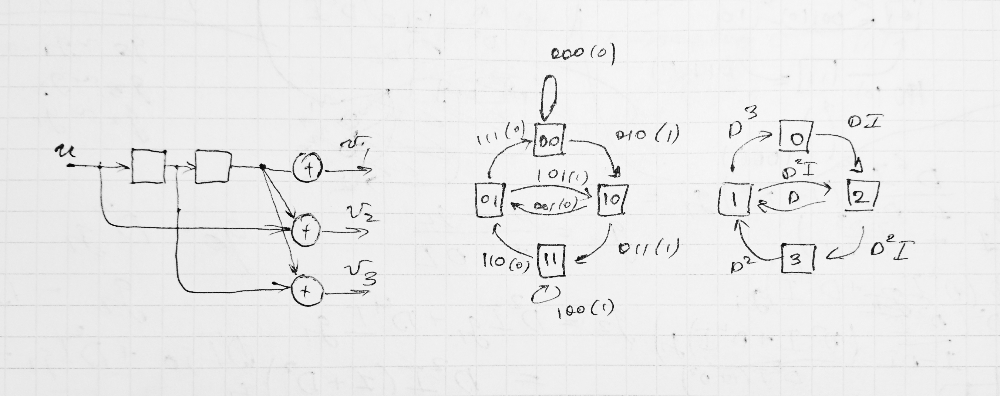
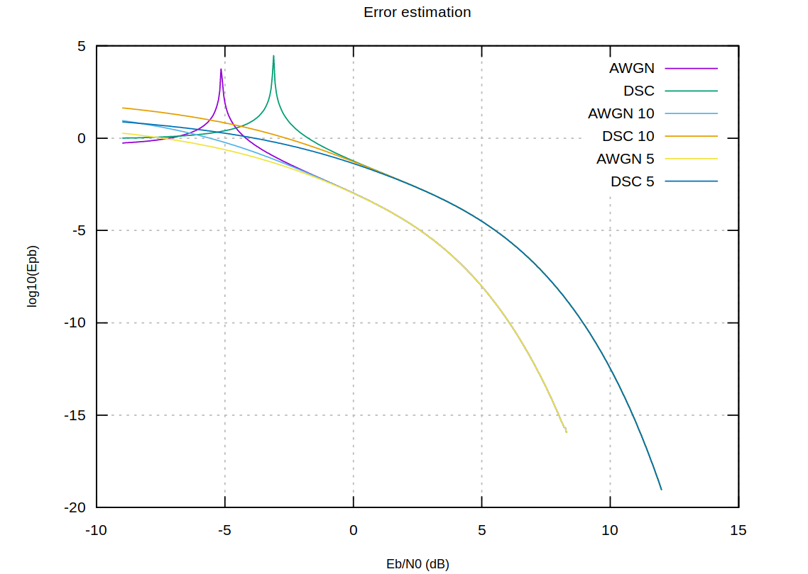

Теория кодирования, д/з по главам 4,7,8
Table of Contents
Весь код для решения задач доступен в открытом репозитории:
https://github.com/volhovm/coding-theory-itmo-2017, большая часть
алгоритмов реализована в файле Lib.hs.
1 Задание 4.2
Был написан код переборного декодирования по максимуму правдоподобия и максимуму апостериорной вероятности. Эксперимент имел входным параметром \(i\) (число итераций), код, задаваемый матрицей \(G\) (индивидуальная, из главы 2). График построен на \(10^{6}\) итерациях, необходимых для обнаружения ошибки в \(10^{-5}\). Алгоритм генерировал случайные входные вектора, пропускал их через канал, декодировал и считал ошибку. Получившийся результат представлен на графике:

Figure 1: Ошибка на бит для линейного кода
Отметим, что декодирование по МАВ почти не отличается от декодирования по МП. Энергетический выигрыш по сравнению с передачей информации без кодирования при ошибке \(10^{-5}\) составляет \(9.6 - 4.5 = 5.1\) дБ, то есть \(3.2\) раза для декодирования с мягкими решениями (АБГШ) и \(9.6 - 6.3 = 3.3\) дБ, то есть \(2.1\) раз для жестких решений (ДСК). Соответственно, разница с асимптотами декодирования составляет \(4.5+1.59=6.19\) дБ (\(4.15\) раз) для мягких решений и \(6.3-0.37=5.93\) дБ (\(3.9\) раза) для жестких решений.
2 Задание 4.4
Были написаны программы построения решеток (синдромной и через МСФ), полученные решетки для \(H\) (синдромная) и \(G\) (\(H\) интерпретированная как \(G\) для МСФ) представлены на изображениях:
Напомним, что матрица \(H\) имеет вид:
\begin{align*} H = \begin{pmatrix} 0 & 0 & 1 & 1 & 0 & 1 & 1 & 1 & 0 & 0 \\ 0 & 0 & 0 & 0 & 1 & 1 & 0 & 1 & 1 & 0 \\ 1 & 0 & 1 & 0 & 0 & 0 & 0 & 1 & 0 & 1 \\ 0 & 1 & 1 & 1 & 0 & 1 & 0 & 1 & 1 & 1 \end{pmatrix} \end{align*}
Figure 2: Решетка, построенная по проверочной матрице

Figure 3: Решетка, построенная по порождающей матрице
3 Задание 7.1
ЛРОС тривиально строится перебором для небольших значений длины заданной последовательности (практически показано, что перебором сложно искать ЛРОС начиная с размера 22).
Найденный ЛРОС имеет первоначальное состояние регистров \(110010\) и вектор мультипликаторов \(001101\). Первые 24 бита последовательности (12 заданых и 10 дополнительных): \(0100110001111001010110\).
4 Задание 7.6
Я реализиловал необходимые утилиты для построения БЧХ кодов и декодер для БЧХ кодов над \(F_{2^k}\). Декодер реализует алгоритм БЧХ и имеет две версии – в одной полином локаторов ошибок вычисляется напрямую с помощью решения матрицы методом Гаусса, в другой для этого используется алгоритм БМ.
Итак, в упражнении предлагается построить двоичный БЧХ код длины 31, исправляющий 3 ошибки. Для этого нам нужно поле \(F_{2^5}\), которое можно построить как \(F_2\lbrack x \rbrack /(x^6 + x + 1)\), поскольку этот полином простой и имеет степень 6. Генератор поля – \(x + 1\). Также, для исправления трех ошибок нам необходимо иметь \(d = 7\). Будем строить БЧХ код в узком смысле – искать последовательные степени генератора начиная строго с \(b = 1\).
Алгоритм построения БЧХ кода выдает следующие значения. Число циклотомических классов, необходимых для покрытия \(\{1\ldots d-1\}\) – три: \(\{\{1,2,4,8,16,32\},\{3,6,12,24,48,33\},\{5,10,20,40,17,34\}\}\). Соответствующие минимальные полиномы и порождающий многочлен:
\begin{align*} M_1(x) &= 1 + x + x^6 \\ M_3(x) &= 1 + x + x^2 + x^4 + x^6 \\ M_5(x) &= 1 + x + x^2 + x^5 + x^6 \\ g(x) &= 1 + x + x^2 + x^3 + x^6 + x^7 + x^9 + x^{15} + x^{16} + x^{17} + x^{18} \end{align*}Степень порождающего многочлена – 18, соответственно при \(n = 30\) имеем \(k = 12\). Несложно построить также \(G\) и \(H\) этого циклического кода, чтобы привести примеры векторов, этому коду принадлежащих. Поскольку кодовые слова достаточно длинные, приведем только один пример – "000000000001111001101000001111".
Если запустить алгоритм ПГЦ на таком векторе, он вернет его же, поскольку обнаружит, что все \(S_i\) равны нулю. Сделаем в этом векторе три ошибки в символах с индексами \({2, 4, 6}\) (нумерация с нуля), заменив их на единицы, и запустим ПГЦ.
task76 = do -- ... print $ second showVec $ decodePGZ bchc $ fromStrVec "001010010001111001101000001111" -- Output: ([7,2,4],"000000000001111001101000001111")
Таким образом, ПГЦ нашел все три ошибочных индекса и выдал исправленную строку. Произвольный порядок индексов обусловлен алгоритмом поиска корней полинома локаторов, который не гарантирует никакого конкретного порядка на выходе.
5 Задания 8.6-8.7
Мой вариант (87) предполагает работу со сверточным кодом \((4,5,6)\), с параметрами, соответственно, \(k = 1\) и \(n = 3\). Полиномы в полном виде: \(D^2\), \(D^2 + 1\), \(D^2 + x\). Схема кодера, а также диаграмма состояния кода представлены на следующем изображении:

Полная система для нахождения расширенной производящей функции кода \(T(D,I)\) выглядит так:
\begin{align*} g_0 &= D^3 g_1 \\ g_1 &= D g_2 + D^2 g_3 \\ g_2 &= D^2 I g_1 + D I \\ g_3 &= D I g_3 + D^2 I g_2 \end{align*}Система решается подстановкой \(g_3\) и \(g_2\) в \(g_1\), а затем \(g_1\) в \(g_0\). В итоге производящая функция и ее производная \(F(D)|_{I=1}\) имеют следующий вид:
\begin{align*} T(D,I) &= -\frac{D^5 I (1 - D I + D^3 I)}{-1 + D I + D^3 I - D^4 I^2 + D^6 I^2} \\ \\ F(D) &= \frac{-D^9 + 2 D^8 + D^7 - 2 D^6 + D^5}{(D^6 - D^4 + D^3 + D - 1)^2} \end{align*}Также сразу приложим вычисления необходимые для задания 8.7. Нам предлагается построить графики оценки вероятности ошибки для кода со спектром, равным усеченному \(T(D,I)\). Для этого представим $T(D,I)$4 в виде ряда (по возрастающей степени \(I\)) и возьмем из него 10 и 5 элементов соответственно:
\begin{align*} T(D,I) = & D^5 I + 2 D^8 I^2 + D^9 I^3 + D^{10} I^4 + D^{11} I^3 (I^2 + 3) + \\ & D^{12} I^4 (I^2 + 2) + D^{13} I^5 (I^2 + 2) + D^{14} I^4 (I^4 + 2 I^2 + 5) + O(D^{15}) \end{align*}Как видим, разложение соответствует диаграмме – несложно обнаружить один путь веса 5, два пути веса 8, и так далее. Усеченные производящие функции кода имеют вид:
\begin{align*} T_5(D,I) &= D^5 I + 2 D^8 I^2 + D^9 I^3 + D^{10} I^4 + 3 D^{11} I^5 \\ T_{10}(D,I) &= D^5 I + 2 D^8 I^2 + D^9 I^3 + D^{10} I^4 + D^{11} I^3 (I^2 + 3) + D^{12} I^4 (I^2 + 2) + D^{13} I^5 (I^2 + 2) \end{align*}Проинтегрировав \(T_5(D,I)\) и \(T_{10}(D,I)\) и приняв \(I = 1\), получаем:
\begin{align*} F_{5}(D) &= D^5 + 4 D^8 + 3 D^9 + 4 D^{10} + 14 D^{11} \\ F_{10}(D) &= D^5 + 4 D^8 + 3 D^9 + 4 D^{10} + 14 D^{11} + 14 D^{12} + 17 D^{13} + 40 D^{14} + 48 D^{15} + 62 D^{16} \end{align*}Далее, построим графики оценок вероятностей ошибки для соответственно \(F(D), F_5(D), F_{10}(D)\). Для ДСК как обычно принимаем \(p_0 = Q(\sqrt{2E/N_0})\) и следовуем выкладкам параграфа 8.3 учебника. В результате получаем следующий график:

На графике показана зависимость оценки вероятности ошибки на бит (ее логарифм, показаны показатели степени по основанию 10) от отношения сигнал/шум на сигнал (в дБ). Оценке вероятности на ДСК соответствуют функции DSC (discrete stationary channel), на АБГШ – AWGN (abstract white gaussian noise). Цифрам 5 и 10 соответствуют усеченные спектры кода. Как можно видеть из графика, оригинальные значения имеют выраженный спайк, а менее точные приближения (с точки зрения наличия меньшего количества элементов разложения) сглажены в этом месте. Кроме того, верхняя граница на вероятность ошибки у АБГШ существенно меньше – впрочем, это не вызывает удивления ( такой же результат был получен и в (4.2)).
6 Задание 8.8
В этом задании я реализовал декодер максимального правдоподобия для усеченного сверточного кода – референс реализация через перебор всех кодовых слов и декодер Витерби (который работает, ожидаемо, быстрее). Далее экспериментальная ошибка на бит при декодировании была построена на графике для сравнения с экспериментальной верхней границей, полученной в предыдущем упражнении.
Как видим, верхняя граница действительно выше экспериментальных данных. Более того, граница при декодировании с АБГШ ближе к реальным данным, что и было предсказуемо ("…при высоких отношениях сигнал/шум…аддитивные оценки дают вполне приемлимые по точности результаты", стр. 239 учебника). В подсчетах я использовал усеченную решетку длины \(L = 5\) (кодирую последовательности длины 4, к ним добавляется два нуля, кодовые слова имеют длину \(3 * 6 = 18\)) – экспериментально удостоверился, что графики для более высоких значений \(L\) почти не отличаются, но с которткими решетками существенно быстрее работает кодирование и декодирование. Также экспериментально был проверен факт \(d_f = 5\) – код гарантировано исправляет любые две ошибки.